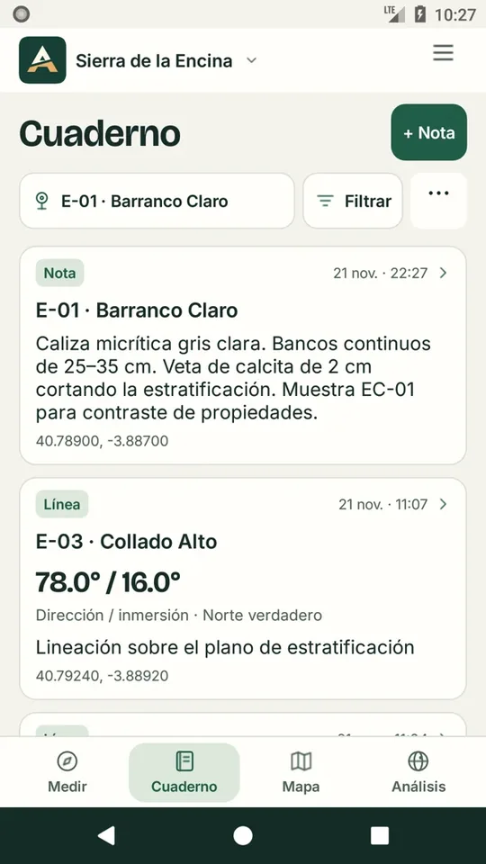
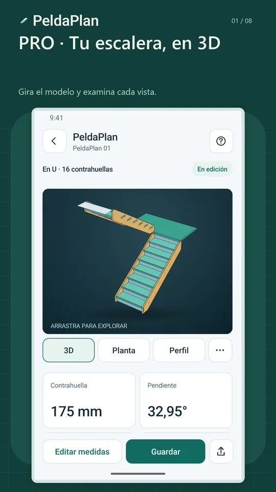
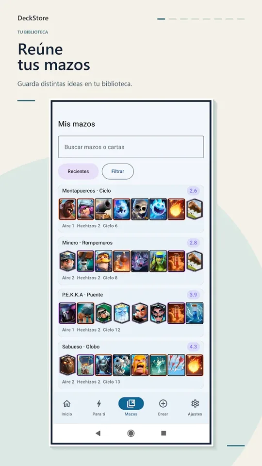
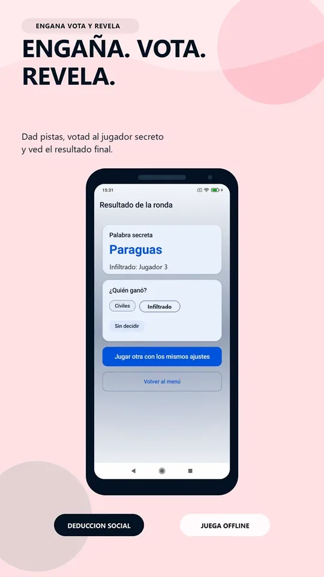
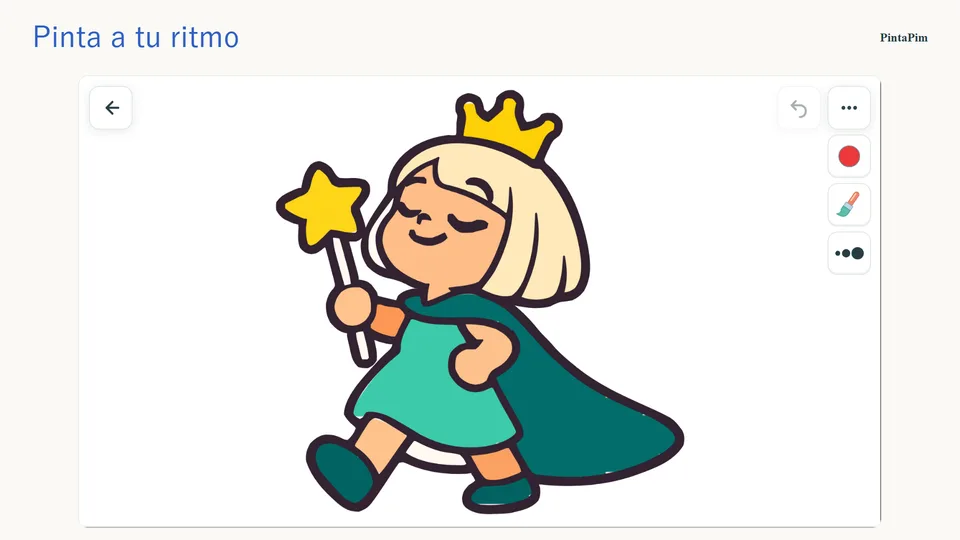

Aflorario
Cuaderno geológico
Brújula, clinómetro, fotos, estereonets y mapas sin conexión en un cuaderno de campo.
Portfolio · Valencia
Más de diez años desarrollando aplicaciones nativas. Diseño, programo y publico mis propias apps: herramientas para obra y campo, utilidades y juegos.
Obra y campo
Apps pensadas para usarse con guantes, al sol y sin cobertura.

Cuaderno geológico
Brújula, clinómetro, fotos, estereonets y mapas sin conexión en un cuaderno de campo.
Informes de obra
Registro fotográfico de visitas a obra e incidencias, con exportación de informes en PDF.
Doblado de tubos
Desplazamientos, distancia entre dobleces y pérdida de alcance según el radio de tu dobladora.

Cálculo de escaleras
Diseño de escaleras con vista 3D y plantillas de peldaños a escala real.
Utilidades y juegos
Apps ligeras, sin registro y pensadas para funcionar sin conexión.

Organizador de mazos
Guarda y organiza tus mazos de Clash Royale con etiquetas, favoritos y notas.

Juego de grupo
Deducción social para fiestas y reuniones: engaña, vota y revela con un solo móvil.

Juego infantil
Dibujo y color para peques: colorear, números, mandalas, pixel art y trazos de luz.
Método
Desarrollo asistido por IA guiado por especificaciones (Spec-Driven Development), con criterios de aceptación claros.
Arneses de ejecución y límites definidos para acotar lo que pueden hacer los agentes.
Reviso personalmente el código y valido cada cambio con pruebas antes de publicar.
Si buscas un desarrollador Android con apps publicadas y mantenidas, escríbeme.
Contactar por LinkedIn